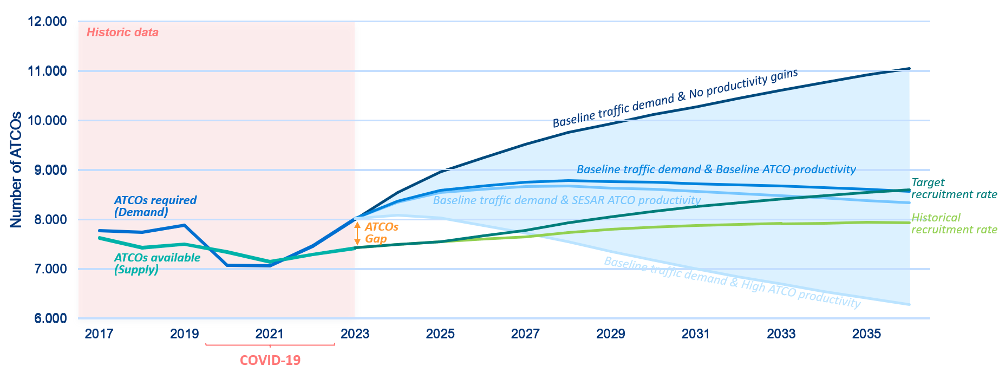

Scenarios, sensitivity and uncertainty
Alternative demand and recruitment scenarios

Figure 14 highlights the combined influence of traffic demand, productivity and recruitment on the future workforce balance. Under all scenarios, the European ATM network enters the projection period with a significant workforce deficit, which becomes most acute during the 2027-2028 period as traffic growth continues to outpace workforce expansion.
The analysis confirms that the ATCO shortage is not expected to disappear in the short term under any of the scenarios considered. Even under favourable assumptions regarding workforce growth and productivity improvements, the workforce gap persists for a substantial part of the projection horizon before gradually narrowing.
The only scenario in which the gap narrows sufficiently to close 2036 is the combination of Baseline Traffic Demand and Baseline Productivity with Target Recruitment Rates. However, this outline relies on a combination of assumptions that are themselves optimistic, as analysed previously.
The analysis also shows that higher traffic growth is sufficient to prevent the gap from closing, even when these favourable productivity assumptions are maintained. Under the High Traffic Demand scenario, the workforce imbalance remains present throughout the projection period despite the productivity gains assumed under the Baseline Productivity scenario. This highlights the extent to which future workforce availability remains exposed to traffic growth.
The most important conclusion is therefore not whether the gap eventually closes under a specific scenario, but that doing so requires the simultaneous realisation of multiple favourable conditions across both the demand and supply sides of the workforce balance. Any delay in improving workforce availability, any shortfall in productivity growth or any increase in traffic demand beyond baseline assumptions results in the gap persisting beyond the end of the projection period.
The period around 2027-2028 emerges as particularly critical. Even under the most favourable combinations of assumptions, the shortage intensifies before gradually improving. Consequently, the analysis suggests that maintaining current trends is unlikely to be sufficient. If the future workforce imbalance is to be reduced, measures affecting both workforce supply and operational efficiency need to be implemented rapidly, as missed opportunities or delayed action are likely to result in the shortage persisting throughout the study horizon.
To isolate the effect of productivity assumptions, the following figure assumes baseline traffic demand and compares alternative productivity and recruitment scenarios.

It should be noted that the productivity scenarios are not forecast, but analytical assumptions intended to test the sensitivity of workforce demand to different productivity trajectories. The Baseline Productivity, SESAR Productivity and High Productivity scenarios are derived either from historical observations or from published European planning assumptions and are used to illustrate a range of potential outcomes rather than predict a specific future level of productivity.
It should, however, be recognised that all productivity scenarios are inherently uncertain. Future technological developments, operational concepts and automation capabilities may generate productivity gains beyond those currently anticipated. Equally, productivity growth may slow if the most accessible efficiency improvements have already been realised. In practice, and assuming that no disruptive technological breakthrough dramatically alters the controller role, the most plausible outcome is likely to lie between the No Productivity Gains and Baseline Productivity scenarios.
Under the Baseline Productivity scenario, workforce demand initially increases as traffic continues to recover and grow, peaking around 2028 before stabilising at about the same level for the remainder of the projection period. In other words, if historical productivity improvements were sustained over the long term, they would broadly compensate for future traffic growth, although not sufficiently to eliminate the existing workforce imbalance.
However, one notable result is that the difference between the Baseline Productivity and SESAR Productivity scenarios remains comparatively limited. Despite the additional productivity gains assumed under the SESAR scenario, the demand trajectories remain relatively close throughout the projection horizon. This suggests that the baseline productivity assumption already captures a significant proportion of the productivity improvements expected under currently foreseeable operational and technological developments. At the same time, it indicates that the baseline scenario is underpinned by the continuation of the strong productivity growth observed historically, an assumption that is not realistic over the longer term.
Productivity improvements generally become more difficult to achieve over time, as the most accessible efficiency gains are typically realised first. Consequently, sustaining historical productivity growth rates over extended periods requires continuous operational, organisational and technological effort. Consequently, it is concluded that, if productivity improvements materialise, they are likely to be limited in magnitude. For this reason, the No Productivity Gains scenario was included and is considered the most realistic reference case. As seen in Figure 13, under this scenario, the existing ATCO gap not only persists but continues to widen over time, indicating that the current workforce imbalance is unlikely to resolve naturally and may become increasingly challenging if no corrective measures are implemented.
Reference case and sensitivity
In addition to understanding the root causes of workforce shortages, it is necessary to assess which interventions have the greatest potential to reduce the future ATCO gap. Since each challenge and solution identified throughout the study ultimately affects one or more variables of the supply-demand model, understanding the relative importance of these variables provides an objective basis for prioritising solutions and recommendations.
The purpose of this section is therefore to determine which model variables have the greatest influence on the future ATCO gap and, consequently, which areas offer the greatest potential for intervention.
Reference case
To assess the relative influence of the model variables on the future ATCO gap, it is first necessary to define a common reference case against which all sensitivity tests can be compared.
The reference case corresponds to the baseline traffic scenario, baseline ATCO productivity scenario and the continuation of the historical recruitment rate observed. The resulting workforce demand, workforce supply and other principal model parameters are summarised in the following table. It is important to highlight that this reference case is not considered the most likely scenario, nor does it represent the study team’s expectations. It is a central case, which already assumes that ANSPs take corrective actions and introduce some measures to address the ATCO gap. This better serves the purpose of illustrating the effect of each variable by comparing equivalent modifications over a reference.
Table 29: Reference case parameters of the sensitivity analysis (Source: Consortium assessment)
| Parameter | Value | Notes |
|---|---|---|
| ATCO demand, 2036 | 8,557 | Baseline productivity, base traffic |
| ATCO supply, 2036 | 7,928 | Observed recruitment rate maintained |
| ATCO gap, 2036 | 629 | Demand - supply |
| Pipeline output | 384 /year | Newly endorsed controllers entering OPS |
| Training capacity ceiling | ANSP-specific | 818 / year in aggregate across the network |
| Training duration | ANSP-specific | 27 months on a weighted average basis |
| Success rate | ANSP-specific | 75.3 % on a weighted average basis |
| Attrition rate | 1.69% | Applied to the operational stock |
The reference case serves solely as a benchmark for the sensitivity analysis. The effect of each variable is assessed relative to this scenario, allowing the contribution of different workforce, training and operational factors to be compared on a consistent basis.
The following table presents the change in the ATCO gap in 2036 resulting from a uniform variation of ±10% in each variable, assessed individually while all other variables are maintained at their reference values. Positive and negative values in the first two columns represent, respectively, a 10% increase and a 10% decrease in the corresponding variable. The resulting values indicate the associated change in the ATCO gap, where positive values correspond to a widening of the gap and negative values correspond to a reduction of the gap.
Not all variables included in the supply-demand model are suitable candidates for intervention. Controlled flight-hours are determined by traffic demand and therefore lie outside the direct control of ANSPs. Similarly, the number of current ATCOs in operations reflects the existing workforce available at the start of the projection period and cannot be modified through current workforce, training or operational measures. Consequently, the sensitivity analysis focuses on the variables that can be influenced through organisational, regulatory, training or operational interventions.
Table 31: Change in the ATCO gap in 2036 under a uniform ±10 % variation of each model variable (Source: Consortium assessment)
| Variable | -10 % | +10 % | % of gap | Interpretation |
|---|---|---|---|---|
| ATCO productivity | +950 | −778 | +152 % / −124 % | Strongest controllable lever |
| Utilisation | +950 | −778 | +152 % / −124 % | Bounded by safety and rostering |
| Maximum staff hours | +950 | −778 | +152 % / −124 % | Bounded by law and agreements |
| Intake | +359 | −359 | +57 % / −57 % | Cumulative, lagged |
| Success rate | +359 | −359 | +57 % / −57 % | Cumulative, lagged |
| Attrition | −110 | +108 | −18 % / +17 % | Retention effect |
| Retirements | −110 | +108 | −18 % / +17 % | Retention effect |
| Training capacity | - | - | - | Indirect; conditions the above |
| Training duration | - | - | - | Indirect; conditions the above |
Table 31 reports the change in the ATCO gap in 2036 resulting from a uniform variation of ±10% in each controllable variable, assessed individually and with all other parameters maintained at their reference values. Although the same relative variation is applied to all variables, a 10% change does not necessarily imply the same level of implementation effort in practice. The results should therefore be interpreted as a measure of relative influence on the ATCO gap rather than as a comparison of implementation feasibility.
The results are best understood in relation to the size of the projected gap. Under the reference case, the model estimates a demand of 8,553 controllers and a supply of 7,928 controllers in 2036, resulting in a gap of 629 ATCOs Again, these figures do not represent a most likely outcome, nor are they indicative of the study’s expectations regarding the evolution of the ATCO gap: they are simply a theoretical central case, used for illustration purposes. Against this benchmark, the analysis shows that the demand-side variables exert the strongest influence on the projected workforce imbalance. A 10% change in ATCO productivity, utilisation or maximum staff hours modifies the gap by approximately 800 to 950 ATCOs, exceeding the size of the projected gap itself.
The demand-side variables have a stronger effect than the supply-side variables because they affect the productivity of the entire operational workforce. By contrast, changes in intake and success rate affect only the additional controllers progressing through the training pipeline and therefore materialise progressively over time as new cohorts complete training. As a result, maintaining current levels of productivity and utilisation is at least as important as increasing workforce inflows, since deterioration in either variable can rapidly offset the benefits of recruitment and training efforts.
Among the supply-side variables, intake and success rate exhibit the largest influence on the projected gap, whilst attrition has a comparatively limited effect. This is largely explained by the relatively low attrition levels observed across the workforce. Consequently, measures targeting workforce retention may contribute to workforce stability and knowledge preservation, but are unlikely on their own to produce substantial reductions in the projected gap.
Overall, the analysis indicates that the variables with the greatest potential to influence future workforce shortages are ATCO productivity, utilisation, maximum staff hours, intake and training success rates. These variables therefore provide the principal quantitative basis for the prioritisation of solutions and recommendations presented in the following chapter.
Enabling conditions
Training capacity and training duration play a different role from the other variables included in the model. When modified individually, neither variable produces a direct change in the ATCO gap. Similarly, varying both variables simultaneously, whilst keeping all other variables unchanged, does not modify the projected workforce imbalance. For this reason, no values are reported for either variable in Table 31.
This result reflects the nature of these variables within the model: training capacity acts as a constraint on the maximum number of trainees that can progress through the pipeline, whilst training duration determines the time required for trainees to reach operational service.
The absence of a direct effect is itself an important finding. It indicates that, at European level, the training system is not currently operating at its maximum capacity under the reference assumptions. Consequently, increasing training capacity or reducing training duration in isolation does not generate additional ATCOs and therefore does not directly alter the ATCO gap.
However, both variables influence the extent to which improvements in other supply-side variables can be translated into additional ATCOs. Their effect therefore becomes visible only when they are combined with changes in intake or success rate, the two variables directly responsible for generating new ATCOs.
To assess this interaction, additional simulations were performed combining a 10% increase in training capacity or a 10% reduction in training duration, and a 10% increase in either intake or success rate. The results show three main findings:
- Training capacity and training duration produce almost identical effects, differing by only one ATCO in 2036;
- A 10% improvement in either variable is not sufficient to eliminate the projected ATCO gap by 2036; and
- Combining these improvements with increases in success rate produces a greater reduction in the gap than combining them with equivalent increases in intake.
More specifically, a 10% increase in success rate reduces the projected 2036 gap by approximately 518 ATCOs, while the same increase in intake reduces it by approximately 328 ATCOs.
These findings suggest that training capacity and training duration should primarily be viewed as enabling conditions rather than direct levers. Their value lies in supporting improvements elsewhere in the training pipeline, particularly in conjunction with measures that increase training success rates. From a policy perspective, this indicates that solutions affecting success rate, together with training capacity and training duration, offer the strongest potential to increase the effectiveness of the ATCO training pipeline and reduce future workforce shortages.